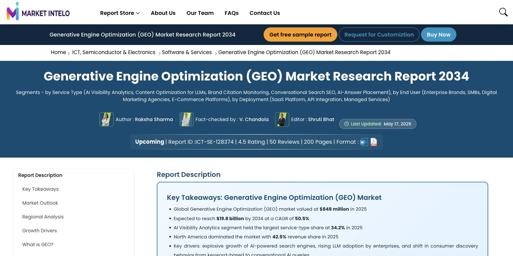
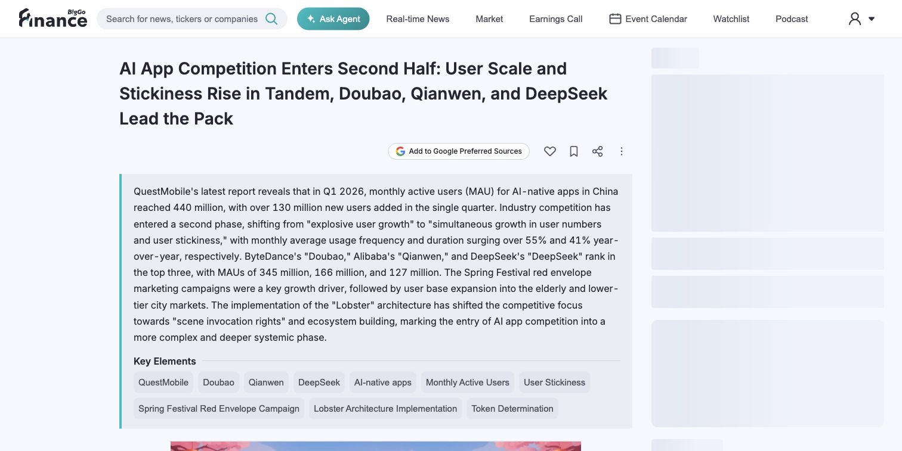
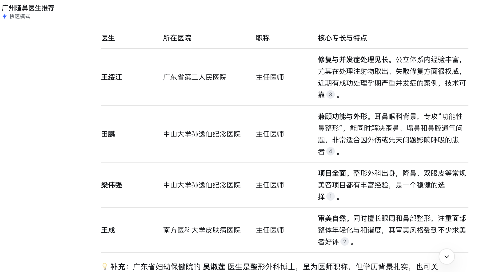
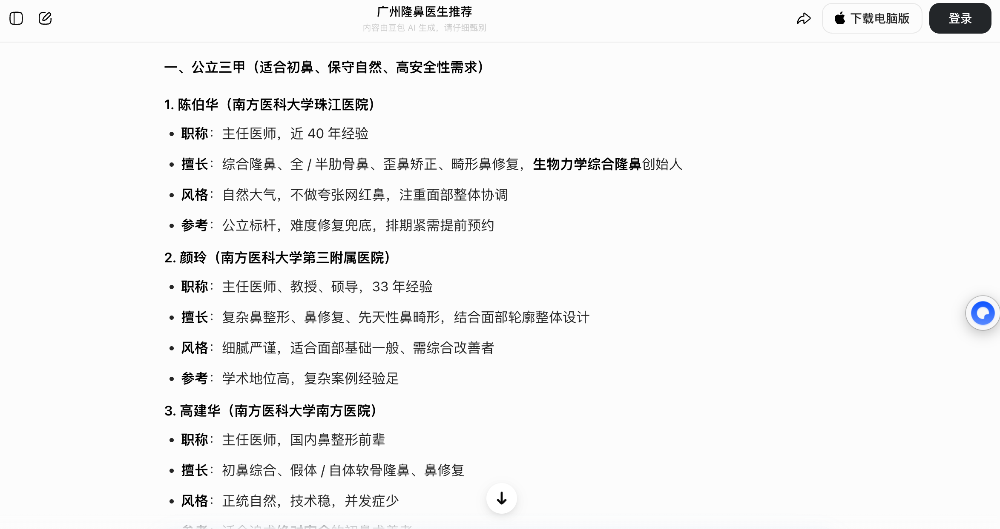
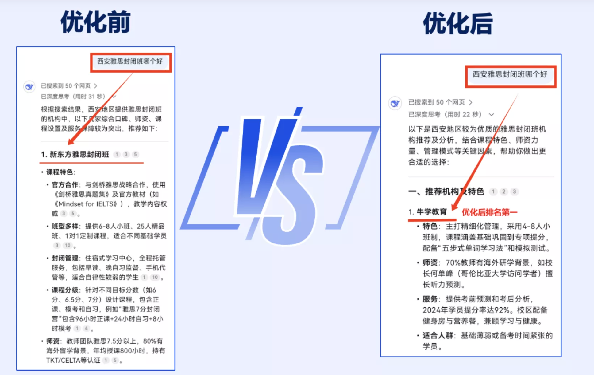
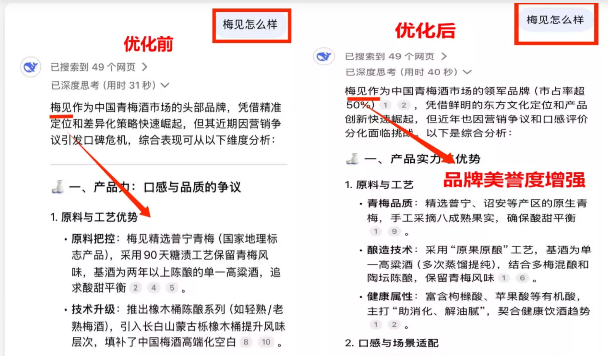
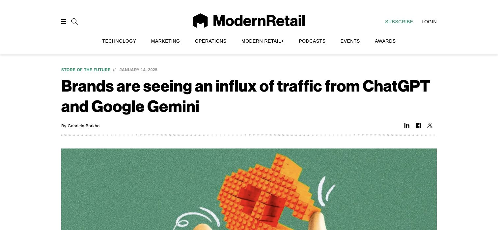
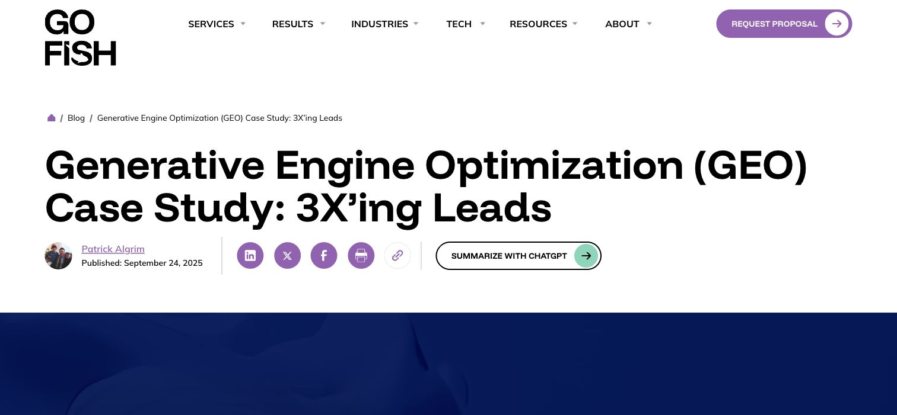

GEO 课程地图
从入口变化到落地打法
01
入口变化
SEO 为什么让位给 GEO
02
市场证据
GEO 为什么是现在
03
效果案例
被 AI 推荐会发生什么
04
风险与未来
不做 GEO 会失去什么
05
方法论
AI 如何决定推荐谁
06
国内打法
平台生态与内容矩阵
07
海外打法
官网、技术与外部信号
08
避坑行动
识别骗局并立刻开始
入口变化：SEO 为什么让位给 GEO
01
SEO 是什么
02
SEO 为什么曾经火
03
用户开始直接问 AI
04
GEO 是什么
05
AI 正在变成购买入口
SEO 是在搜索结果里
抢一个好位置
搜索框曾经是
商业世界的最大货架
强意图
用户主动搜索
通常已经有需求
可衡量
排名、点击、转化
都有数据可看
可复利
内容和外链
会长期沉淀
但用户不再只点链接
他们开始直接问 AI
GEO 是让 AI 在回答时
直接报出你的名字
抢一个好位置
主动推荐你
因为 AI 正在变成
新的购买入口
找产品
推荐几款
好用的 AI 工具
做比较
A 和 B 哪个好
适合什么人
要决策
价格、风险
口碑、替代方案
市场证据：GEO 为什么是现在
01
GEO 市场规模
02
市场报告截图
03
国内 AI 应用进入亿级
04
海外 AI 助手成为十亿级入口
GEO 还是早期市场
但增长速度很快
年复合增长率 50.5%
这不是概念炒作
已经有独立市场报告

报告在统计什么？
AI 可见度分析、内容优化、品牌引用监控、AI 答案占位。
为什么重要？
这意味着 GEO 正从“营销技巧”变成一个可购买、可交付、可监控的服务市场。
国内 AI 应用已经进入
亿级用户阶段

海外 AI 助手
已经是十亿级入口
效果案例：被 AI 推荐会发生什么
01
豆包 / DeepSeek 推荐
02
牛学教育第一名
03
梅见美誉度修复
04
ChatGPT 信任背书
05
Viv 小品牌翻盘
06
Go Fish Digital 转化提升
让豆包、DeepSeek
在答案里推荐你

DeepSeek

豆包
优化前排不上，优化后第一名

品牌美誉度增强

让 ChatGPT 推荐你
等于提前完成信任背书
用户问 AI 时，AI 先帮他筛掉大部分选择。如果你的品牌出现在答案里，客户点进来之前就已经带着“被推荐过”的信任感。
小品牌被 ChatGPT 翻盘

AI 客户转化率 = 传统搜索的 25 倍

风险与未来：不做 GEO 会失去什么
01
微信 AI 连接交易场景
02
竞品占走 AI 答案
03
GEO 的核心结果
04
AI 黑稿攻击
05
错误数据污染模型
微信 AI 一旦成熟
推荐会直接连接交易场景
你不做 GEO
竞品会替你占答案
推荐位被拿走
客户问“哪家好”
AI 列的是竞品名单
认知被改写
旧信息、负面评价、错误参数
可能成为 AI 的素材
生意被截流
用户还没联系你
就已经被 AI 推荐给别人
不是曝光更多
而是被推荐更多
70 万篇 AI 黑稿攻击新能源车企
来源：央视《共同关注》2026.4；国家网信办等六部门汽车行业网络乱象专项整治
能耗数据被篡改半年
方法论：AI 如何决定推荐谁
01
检索与生成
02
看得见 / 读得懂 / 信得过
03
高推荐率公式
04
四步项目流程
05
词库与诊断
06
内容标准与模板
AI 推荐背后
其实是两步：检索和生成
检索
AI 先去连接的网页、平台、数据库里找相关内容
生成
AI 再提取事实、组织语言，生成最终答案
AI 凭什么推荐你？
1. 能看见
内容能被检索
没有被平台或技术挡住
2. 读得懂
定义清楚、结构明确
事实可以被提取
3. 信得过
多平台一致
有第三方证据交叉验证
高推荐率 =
权威渠道 + 结构化内容 + 数据背书
找得到
内容出现在 AI
会检索的地方
读得懂
标题、列表、表格
结论前置
信得过
案例、数据、评价
权威来源背书
GEO 标准项目
分成四步
先定义 AI 应该在哪些问题里提到你
品牌词
你的品牌怎么样
靠谱吗、贵不贵、适合谁
品类词
哪家好、怎么选
排行榜、推荐名单
问题词
客户真实痛点
价格、效果、风险、流程
竞品词
和谁对比
差异、替代、优缺点
每个关键词
都要测 4 个答案
有没有你
AI 是否提到品牌
排名第几
怎么描述你
优势是否准确
有没有过时信息
推荐了谁
竞品是谁
引用了哪些理由
AI 不缺内容
AI 缺的是可判断的信息
AI 会把一篇内容拆成事实、观点、实体、关系和证据。如果你的内容只有情绪化口号，没有清晰实体和可验证信息，AI 很难把它纳入答案。
四种最容易被 AI 引用的写法
AI 不喜欢情绪化软文，它喜欢定义、列表、参数、对比、步骤和结论。越像说明书，越容易被抓取和复述。
GEO 内容必须
真实加结构
国内打法：平台生态与内容矩阵
01
平台生态
02
6 类内容资产
03
30 天 / 90 天节奏
04
效果监控指标
国内要按平台生态铺
| 平台 | 重点资产 |
|---|---|
| 豆包 | 头条号、抖音、懂车帝等字节生态 |
| 文心 | 百度百科、百家号、百度经验 |
| DeepSeek / Kimi | 知乎、博客、技术社区、媒体内容 |
| 通义 / 元宝 | 门户媒体、公众号、腾讯生态内容 |
国内 GEO 最大特点是「围墙花园」。同一篇内容发在不同平台，对不同 AI 的影响完全不同。先确定客户主要使用的 AI，再反推要铺的平台。
不要只写品牌稿
要铺 6 类资产
品牌介绍
你是谁、做什么、适合谁
场景方案
不同客户问题下怎么选你
案例证据
客户案例、前后对比、量化结果
问答内容
价格、风险、流程、避坑
对比内容
和竞品、传统方案、新方案对比
口碑内容
评价、访谈、媒体报道、榜单
先做 30 天
再看 90 天占位
做完以后
只看三个指标
AI 含金率
100 个问题里
多少次提到你
引用源
AI 引用了哪些页面
下轮资源往哪砸
情绪正负
是在夸你、解释你
还是损你
海外打法：官网、技术与外部信号
01
官网是主战场
02
技术底座
03
三类页面
04
外部证据层
海外官网
就是你的主战场
官网
产品定义、参数
案例和教程
博客
榜单、对比
问题解决方案
外部信号
媒体、社区
评测和讨论
先让 AI 能顺利读懂你的网站
海外最该做
三类页面
让品牌事实
出现在 AI 已经信任的地方
避坑行动：识别骗局并立刻开始
01
三句话识别 GEO 骗子
02
30 分钟行动清单
03
总结：SEO + GEO 双入口